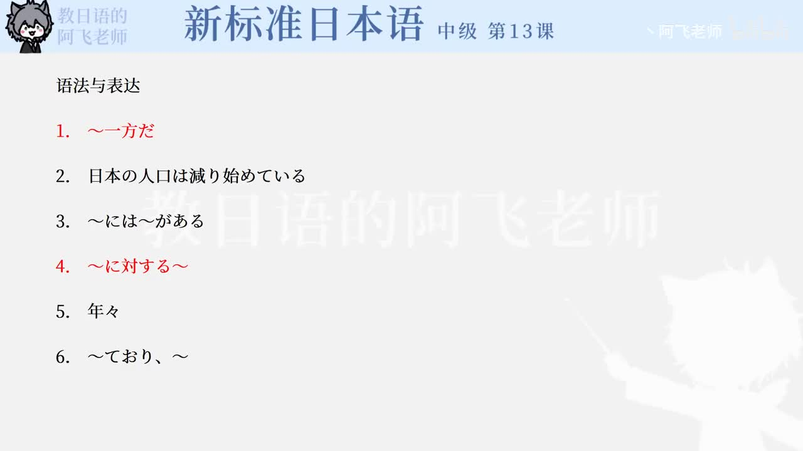

Bilibili P162 · Text
日本の人口が減っている：少子化
用统计数据、社会背景、经济因素和政策回应，训练说明文里的对比、原因、趋势和预测表达。
全篇听力精讲
按 5 段说明文轮播。每段包含原文、平假名、中文、语法重点和结构拆解。
说明文结构地图
提出对比世界人口增加，日本人口减少
定义现象生育减少称为少子化
解释背景晚婚化、出生率下降
总结课题意识改变需要时间
逐段精读
语法速记
〜一方だ趋势持续
表示某种趋势朝一个方向发展，多用于增加、减少、恶化等客观变化。
〜によると信息来源
引用统计、报道、调查等来源，后面常接数据或判断。
それに対して对比
把前后两组对象或数据放在一起比较。
〜ことにある原因所在
「原因は〜ことにある」用于书面说明原因。
〜と呼ぶ称为
「AをBと呼ぶ」表示把A称为B。
〜に対する对于……的
修饰名词，常用于意识、态度、政策等抽象名词。
〜につながる导致/关联
说明前项与后项结果之间的联系。
〜ても让步
表示即使发生前项，后项仍然成立。
〜わけはない强烈否定
表示“不可能……”，语气比普通否定强。
〜までには期限之前
表示到某一时间点或阶段之前。
核心词汇与搭配
练习与复习
来源说明：视频标题、时长、CID 和首帧来自 Bilibili 公开视频接口；课文依据本地新标日中级第13课「日本の人口が減っている－少子化」数据整理。